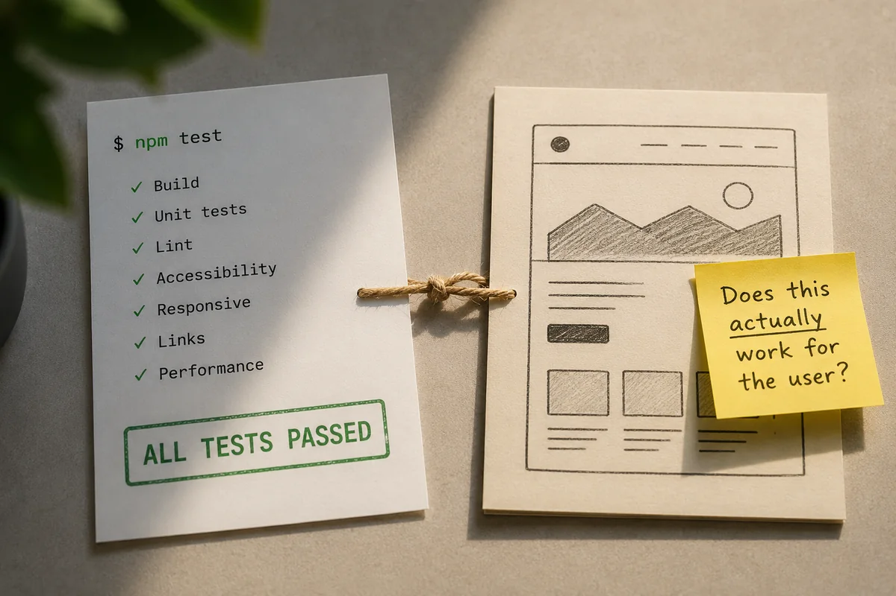
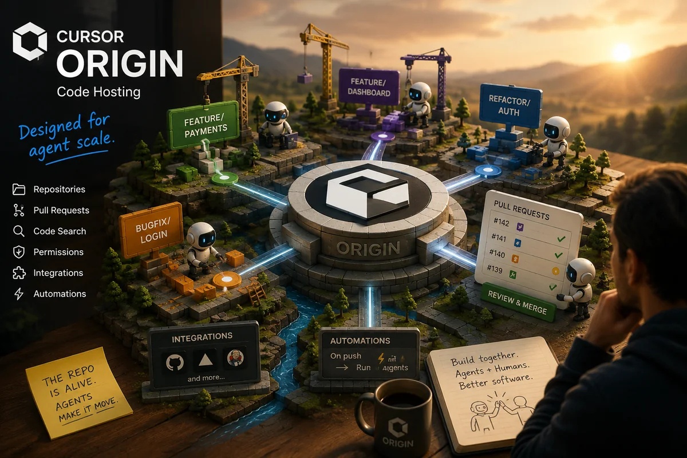
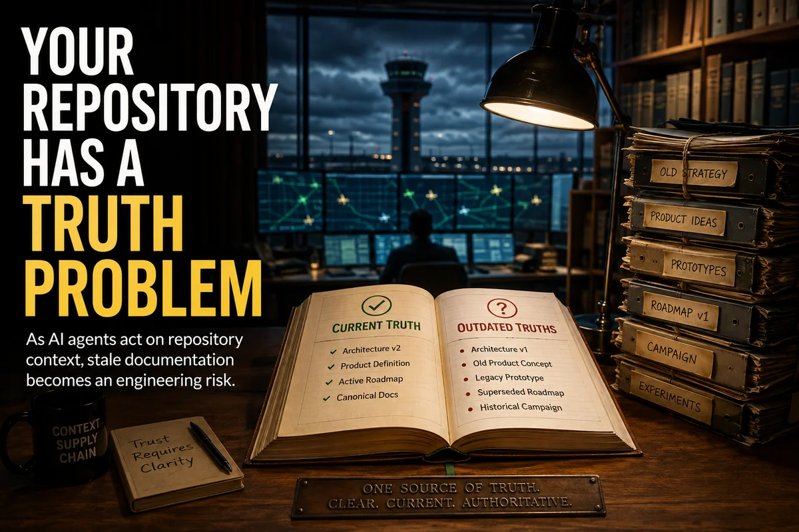
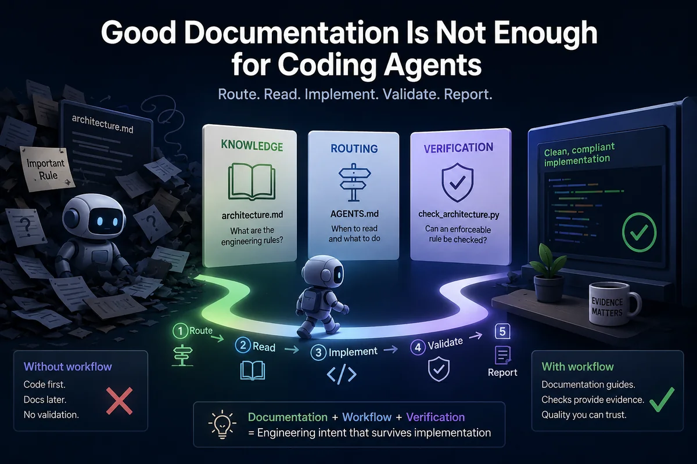

Reader path · 4 steps
New to AI concepts
Build a practical mental model before moving into engineering practice.
Writing
Essays, series, and practical explanations from Software Signal—written to clarify engineering questions, examine evidence, and make the work useful to practitioners.
The six newest Article Works, whether published here or with an external publication.

The Frontend Passed. The Experience Didn’t.Published on Medium ↗
Cursor Just Launched Its Own Git Forge. It’s Built for AI Agents.Published in Generative AI ↗
Your Repository Has a Truth ProblemPublished in Analyst’s Corner ↗
I Stopped Trusting My Coding Agent to Read the DocsPublished on Medium ↗Distinct editorial stream
The newest newsletter editions, hosted and archived by Beehiiv.
The first published editions will appear here automatically. Browse Beehiiv for the current archive.
Small, stable journeys for readers who want a useful place to start.
Reader path · 4 steps
Build a practical mental model before moving into engineering practice.
Reader path · 4 steps
Move from prompting to context, task selection, and review.
Reader path · 5 steps
Connect adoption, standards, governance, evidence, and human responsibility.
Reader path · 4 steps
Start with the engineering story, then inspect working systems and evidence.
Curated previews here; complete generated membership on every Topic page.
Topic cluster
Context, architecture, review, and delivery practices for reliable AI-assisted software work.
Topic cluster
How business rules, documentation, standards, and organizational knowledge reach humans and AI systems.
Topic cluster
Task boundaries, agent coordination, generated-work review, evidence, and accountable human control.
Topic cluster
AI adoption, engineering standards, evidence, and leadership practices for reliable delivery.
Prefer guided practice? Start with Python Foundations for Data Science from Software Signal Learning.
Writing to systems
The Writing page explains the ideas and tradeoffs. The Systems section shows applied experiments, demos, architecture notes, and working examples.